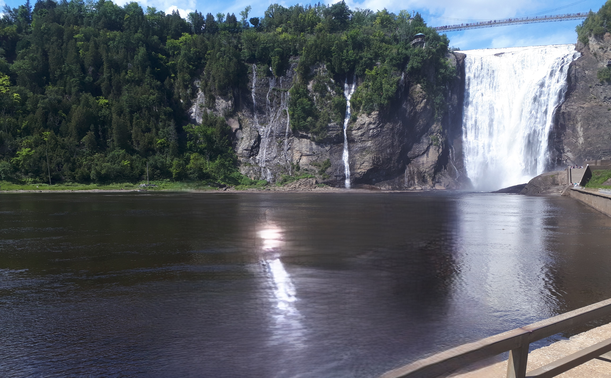

Quebec
les meilleurs choses a voir
Vieux-Québec

Parc de la Chute-Montmorency
Faire face à une chute 30 mètres plus haute que celles du Niagara

Parc national de la Jacques-Cartier
Explorer une des plus belles vallées glacières du Québec

Île d'Orléans
Faire le tour de l'île à la rencontre des artisans du terroir

Musée national des beaux-arts du Québec
S'émerveiller devant les œuvres de la plus grande collection d'art du Québec
Sanctuaire de Sainte-Anne-de-Beaupré
Se recueillir au plus ancien lieu de pèlerinage au nord de Mexico
Village Vacances Valcartier / Hôtel de Glace
S'éclater au plus important complexe récréotouristique de l'est du Canada
Aquarium du Québec
Entrer dans l’univers fascinant de près de 10 000 spécimens représentant 300 espèces
Musée de la civilisation
Apprendre au grand musée populaire interactif du Québec
Wendake
Découvrir les traditions ancestrales du patrimoine huron-wendat
lien vers

Contactez-nous
Plan du site